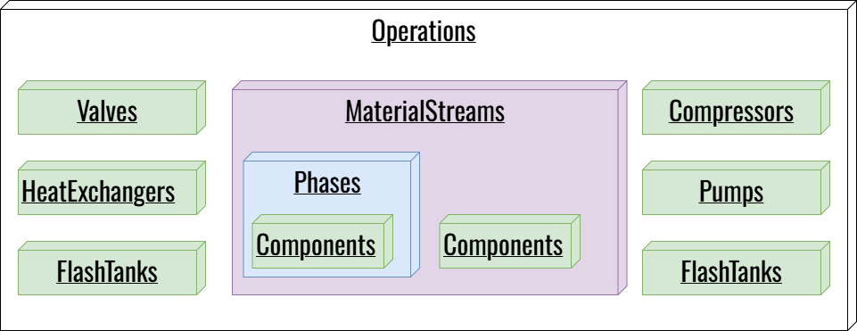

Operations¶
How UniSim-Bridge represents operations¶
UniSim-Bridge wraps each operation type in a Python class derived from Operation. These classes cache the COM objects, record selected properties at every time step, and upload the values to the SQLite database.
The base class lives in UnisimConnector.py as Operation. Each subclass (e.g., Valves, Controllers) only has to declare two things:
1. Its _operation_title (which matches UniSim's TypeName).
2. Its default properties dictionary (which properties to read and in what units).
The Operation Base Class¶
Because all operation classes inherit from the base Operation class, understanding the base class means understanding how every piece of tracked equipment behaves.

1. Tracking the Configuration (names)¶
When easy_setup() runs, it populates the _names list. You can interact with this list using the .names property. The setter extends the list, allowing you to add new targets programmatically. It removes duplicates via sets before assigning.
2. Building and Validating Objects (_build_object)¶
Before data can be collected, _build_object() must find the actual UniSim COM objects. It does this by:
- Checking the main flowsheet's Operations collection.
- Checking any requested subflowsheets.
- Verifying the object's TypeName matches the class's _operation_title.
- Storing the valid COM objects in the self.objects dictionary.
If an object is not found or has the wrong type, it prints a warning (e.g., 'VLV-100' not found in valveop list) and removes it from the tracking list so it doesn't cause errors later.
3. The Performance Cache (build_properties_cache)¶
In COM, fetching a property object (like valve.ActuatorPosition) is slow. Doing it every time step for every valve creates a massive bottleneck.
To solve this, build_properties_cache() runs once before the simulation loop. It looks up the COM object for every property of every tracked item and saves it in a dictionary called comObjs_properties. During the time-stepping loop, the code simply calls .GetValue(unit) on these pre-fetched objects, resulting in a massive performance improvement (up to 150% faster).
4. Data Collection and Persistence (_update_data & _insert_row_to_db)¶
At every time step, _update_data(time) is called. It loops through the cached properties, reads the current value, and builds a dictionary of the data.
It then passes this dictionary to _insert_row_to_db(), which uses an SQL INSERT ... ON CONFLICT DO UPDATE statement. This "upsert" logic means that if a simulation crashes and restarts on the same time step, it will just overwrite the existing row rather than failing or creating duplicates.
5. Schema Evolution (create_operation_table)¶
The create_operation_table() method handles database initialization. It creates the table based on the properties dictionary. Crucially, if you add a new property to the class in UnisimConnector.py later, the method detects that the column is missing from the existing database and uses ALTER TABLE ADD COLUMN to safely update the schema without deleting your existing simulation data.
The _operation_title → TypeName match¶
Each subclass sets _operation_title to the exact string UniSim uses as an operation's TypeName. That's how _build_object() knows which entries in Flowsheet.Operations belong to which class: it looks up the object, reads its TypeName, and rejects it if it doesn't match.
You can inspect this raw mapping for any open simulation case using a simple Python loop:
TypeName (UniSim) |
Python class | Default properties |
|---|---|---|
materialstream |
MaterialStreams |
Pressure, Temperature, MassFlow, VapourFraction |
valveop |
Valves |
ActuatorPosition, PressureDrop |
compressor |
Compressors |
CompressorSpeed, AdiabaticEff, Energy |
heatexop |
HeatExchangers |
Duty |
flashtank |
Flashtanks |
VesselPressure, VesselTemperature |
fbcontrolop |
Controllers |
SP, PV, OP |
pipeseg |
Pipesegs |
PressureDrop |
heaterop |
Heaters |
ProductTemperature, FeedTemperature |
coolerop |
Coolers |
ProductTemperature, FeedTemperature |
spreadsheetop |
Spreadsheets |
(user-defined cells) see how to collect spreadsheet data in |
The full, current property list for each type is on Object Properties.
Material streams are a special case¶
MaterialStreams is not stored under Flowsheet.Operations — it's a parallel collection on Flowsheet.MaterialStreams. This is why setup_subsep.py has both MATERIAL_STREAMS and OPERATIONS-style lists: they map to two different UniSim collections, even though they end up in the same SQLite database.
MaterialStreams also does more than the other classes: it records bulk stream properties, per-component flows and fractions, and — for streams listed in MATERIAL_STREAMS_PHASE — per-phase properties. See UnisimConnector.py for the class map.
See also¶
- Navigating the COM Object Tree — how to walk
Flowsheet.OperationsandFlowsheet.MaterialStreamsat runtime, and howdir()reveals the properties of each operation. - Properties — every property the framework tracks, per class.
- Database Tables — which SQLite table each operation type writes to.